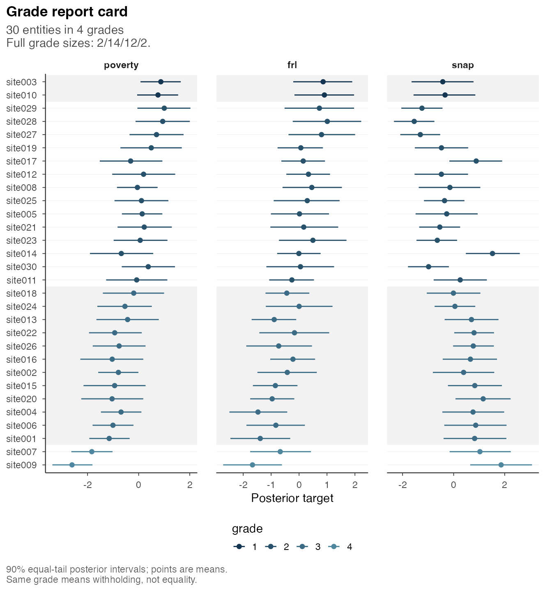
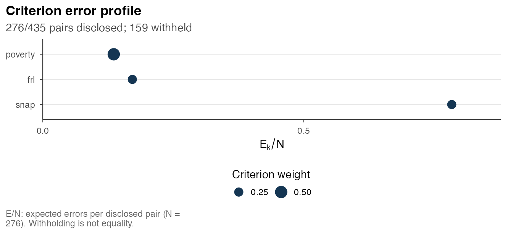
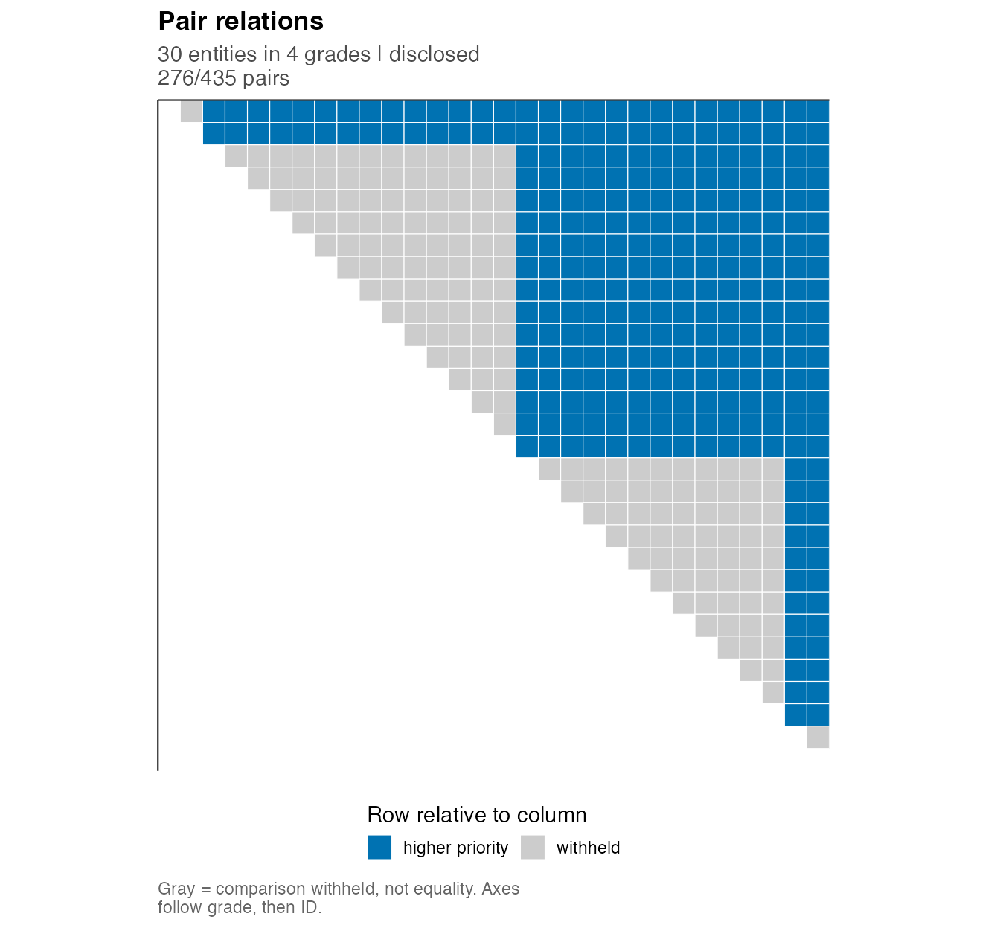

This retained example considers three criteria and preserves the original article URL. Getting started introduces a smaller one-criterion example and its extension to two criteria for the same sites. Reading and exporting results describes the current table and report interfaces.
postrank assigns a common integer grade to each entity using posterior information on several criteria. Grade 1 denotes the highest-priority group. A common grade withholds the comparison between two entities when its expected disclosure cost is not justified under the declared loss; it does not assert equality of their targets. The analysis starts from supplied posterior draws or coefficients and involves no model fitting.
We describe seven stages of analysis for the bundled example. The solver results were previously computed by the package maintainer and are read from caches bound to their source and settings. Building the article therefore requires no solver executions.
library(postrank)
source(system.file("scripts", "_vignette-setup.R", package = "postrank", mustWork = TRUE), local = TRUE)1. Entities, criteria and orientation
pr_example_draws holds 4,000 joint posterior draws for
30 sites on three criteria. The criteria are named poverty,
frl and snap for illustration only. The values
are synthetic latent needs drawn from a fixed known law and are not
empirical measurements.
dim(pr_example_draws$joint_draws$tensor$values) # draw x entity x criterion
#> [1] 4000 30 3
head(pr_example_draws$entity_ids)
#> [1] "site001" "site002" "site003" "site004" "site005" "site006"
pr_example_draws$criterion_ids
#> [1] "poverty" "frl" "snap"
vapply(pr_example_draws$targets, `[[`, "", "orientation")
#> [1] "higher_priority" "higher_priority" "higher_priority"Larger target values mean higher priority on every criterion, so a smaller grade label means a higher-priority block.
2. The typed input and its declarations
A postrank_draws object carries the draws together with
eight required scientific declarations (targets, context, provenance,
origin, identification, tie justification, joint generation and sampling
provenance).
pr_example_draws
#> <postrank_draws> 30 entities with posterior input
#> 3 criteria: poverty, frl, snap.
#> 4000 retained IID draws; each draw contains all entities and criteria.
#> The input structure has been checked. The declared sampling history and
#> statistical model have not been independently verified.
#> i summary(x) describes the targets; details = TRUE adds source records.
validate_postrank_draws(pr_example_draws)$valid
#> [1] TRUE
pr_example_draws$targets[[1]][c("criterion_id", "estimand", "units")]
#> $criterion_id
#> [1] "poverty"
#>
#> $estimand
#> [1] "Synthetic latent need on the 'poverty' criterion under the frozen A8-recipe known-Gaussian posterior law (an illustration, not a real poverty measure)"
#>
#> $units
#> [1] "standardized latent units (prior variance 1)"Validation checks the completeness of declarations, finiteness of
values, and consistency of identifiers and dimensions. The truth of the
scientific declarations and the adequacy of the posterior model require
separate assessment.
vignette("inputs-and-producers", package = "postrank")
describes construction of an input object from a supplied array.
3. Policy and computation are separate
The decision settings specify criterion weights w,
withholding cost tau and the maximum number of grades
G_max. These define the loss and admissible reports.
Computational controls specify the resources and stopping criteria used
by the solver. They can therefore be varied while the decision problem
is held fixed.
settings <- postrank_settings(weights = c(poverty = .5, frl = .25, snap = .25), tau = .35, G_max = 4L)
settings
#> <postrank_settings> Choices for the grading decision
#> Loss: the weighted average of criterion losses.
#> At most 4 grades; fewer may be used.
#> Withholding cost (tau): 0.35 per withheld pair.
#> Criterion Weight
#> poverty 0.5
#> frl 0.25
#> snap 0.25
#> Tau prices a withheld comparison; it is not an error-rate limit.
#> i Use these choices with postrank(settings = x).
control <- postrank_control(time_limit = 60, threads = 1L, seed = 1304L)
control
#> <postrank_control> Computation settings
#> Time limit: 60 seconds; 1 thread.
#> Search: candidate search, relaxation bounds and optional integer optimization.
#> Absolute loss gap: 1e-08; relative objective gap: 0.
#> Progress messages: inherit option (quiet by default).
#> Solver output: off.
#> i summary(x, details = TRUE) shows the seed, search options and tolerances.The declared loss charges, for every pair of entities, the weighted
posterior probability of a wrong-direction comparison when the pair is
ordered and tau when it is withheld. Its average over pairs
is the risk R; withholding every comparison (the
all-withheld action) has risk exactly tau.
4. The analysis
postrank() builds the pairwise error probabilities,
solves for a common grade and validates the incumbent. With
backend omitted it uses
getOption("postrank.backend") and then Gurobi; it never
switches to another solver on failure. The call below selects HiGHS
explicitly. It is the call that produced the cached result, shown here
but not run:
a35 <- postrank(pr_example_draws, settings = settings, backend = "highs", control = control)
a35 <- load_or_compute("analysis_30x3_tau35")
a35
#> <postrank_analysis> 30 entities in 4 grades (sizes 2 / 14 / 12 / 2)
#> 3 criteria: poverty, frl, snap.
#> Posterior loss: 0.3226.
#> Disclosed 276 of 435 pairs (63.4%); withheld 159.
#> Expected error among disclosed pairs: poverty 0.136; frl 0.172; snap 0.784.
#> Solver: Optimal within solver tolerances.
#> Optimization gap: 5.55e-17; requested absolute gap 1e-08.
#> Prepared: report card, fragility.
#> Grade 1 has highest priority; a shared grade withholds the comparison.
#> grade 1 (2): site003, site010
#> grade 2 (14): site005, site008, site011, site012, site014, site017,
#> site019, site021, site023, site025, site027, site028, site029, site030
#> grade 3 (12): site001, site002, site004, site006, site013, site015,
#> site016, site018, site020, site022, site024, site026
#> grade 4 (2): site007, site009
#> i summary(x) explains the loss, settings and bounds; get_grades(x) returns
#> all grades.Cached asset analysis_30x3_tau35: built by the
maintainer with postrank 1.1.0 and the explicitly selected highs backend
(version 1.12.0.3) at 2026-10-30T14:15:54Z; 1 solve, recorded status
optimal. Reading it here solves nothing.
The same posterior under tau = .25 (the cached asset
analysis_30x3) gives a different action: every comparison
is withheld.
a25 <- load_or_compute("analysis_30x3")
a25
#> <postrank_analysis> 30 entities in 1 grade; all comparisons withheld
#> 3 criteria: poverty, frl, snap.
#> Posterior loss: 0.2500.
#> Disclosed 0 of 435 pairs (0.0%); withheld 435.
#> Expected error among disclosed pairs: NA (N = 0); no pairs were disclosed.
#> A single shared grade withholds every comparison; it is not an error-free
#> ranking.
#> Solver: Optimal within solver tolerances.
#> Optimization gap: 0; requested absolute gap 1e-08.
#> Prepared: report card, fragility.
#> Grade 1 has highest priority; a shared grade withholds the comparison.
#> grade 1 (30): site001, site002, site003, site004, site005, site006,
#> site007, site008, site009, site010, site011, site012, site013, site014 +16
#> more
#> i summary(x) explains the loss, settings and bounds; get_grades(x) returns
#> all grades.At tau = .25, the validated incumbent withholds all
comparisons among the 30 sites. Under this loss, posterior imprecision
and disagreement between criteria are consistent with the absence of a
lower-loss partition in the search. The all-withheld action is an
admissible decision, without implying equality of the sites. Since
changing tau changes the loss, the resulting risks do not
provide a common scale for ranking these two settings.
5. Grades, profiles and the report card
table(get_grades(a35))
#>
#> 1 2 3 4
#> 2 14 12 2
get_profile(a35)
#> criterion weight E E_over_M E_over_N risk q budget_slack
#> 1 poverty 0.50 37.52875 0.08627299 0.1359737 0.2142040 NA NA
#> 2 frl 0.25 47.36800 0.10889195 0.1716232 0.2368230 NA NA
#> 3 snap 0.25 216.25150 0.49712989 0.7835199 0.6250609 NA NA
#> is_minimax_max
#> 1 FALSE
#> 2 FALSE
#> 3 FALSEE_over_N is the expected number of wrong-direction
disclosed pairs per disclosed pair on each criterion. When nothing is
disclosed it is NA, not 0:
get_profile(a25)[, c("criterion", "E", "E_over_N", "risk")]
#> criterion E E_over_N risk
#> 1 poverty 0 NA 0.25
#> 2 frl 0 NA 0.25
#> 3 snap 0 NA 0.25The report card lists each entity’s grade, how many entities it is disclosed above and below, and its posterior means and central intervals:
a35$report_card
#> <postrank_report_card> 30 entities with grades and marginal intervals
#> 90.0% central intervals; summaries of the declared posterior.
#> Entity Grade Above Below Withheld
#> site003 1 28 0 1
#> site010 1 28 0 1
#> site029 2 14 2 13
#> site028 2 14 2 13
#> site027 2 14 2 13
#> site019 2 14 2 13
#> site017 2 14 2 13
#> site012 2 14 2 13
#> site008 2 14 2 13
#> site025 2 14 2 13
#> Showing 10 of 30 rows; the full table is retained in the object.
#> Above and below count disclosed relations; withheld counts entities sharing
#> the grade.
#> i as.data.frame(x) includes every criterion's mean, interval and expected
#> rank.
autoplot(a35)

A posterior mean can lie outside its equal-tail interval when the posterior is skewed; the figure draws the stored values unchanged.
6. Pair relations
get_relations() returns the disclosed relation of every
ordered pair: 1 if the row entity is placed above the
column entity, -1 below and 0 withheld.
rel <- get_relations(a35)
rel[1:5, 1:5]
#> entity_j
#> entity_i site001 site002 site003 site004 site005
#> site001 0 0 -1 0 -1
#> site002 0 0 -1 0 -1
#> site003 1 1 0 1 1
#> site004 0 0 -1 0 -1
#> site005 1 1 -1 1 0
table(rel[upper.tri(rel)])
#>
#> -1 0 1
#> 164 159 112
postrank_plot_relations(a35, labels = "none")
A relation map represents one action under specified decision
settings. Maps obtained under different tau values or
criterion weights describe the resulting changes in disclosure. Their
comparison does not establish a preferred policy, since the
corresponding losses differ.
7. Status, bounds, extras and provenance
get_risk(a35)
#> $risk
#> [1] 0.322573
#>
#> $lower_bound
#> [1] 0.322573
#>
#> $gap
#> [1] 5.551115e-17
#>
#> $status
#> [1] "optimal"The released grade is a validated incumbent. Its risk is the upper bound; the lower bound is the solver’s. A zero gap means the solver found no better grade within its tolerances for these coefficients; it is not a numerical certificate, the number of optimal grades is unknown, and the gap says nothing about Monte Carlo or model uncertainty.
postrank() adds optional extras and records why each one
is or is not available. By default the report card is on, Monte Carlo
fragility is computed for joint IID or MCMC input, and cross-fitting and
full diagnostics are off.
do.call(rbind, lapply(a35$extras, function(e) data.frame(requested = e$requested, available = e$available,
reason = if (is.null(e$reason)) "" else e$reason)))
#> requested available reason
#> report_card TRUE TRUE
#> fragility TRUE TRUE
#> crossfit FALSE FALSE not_requested
#> diagnostics FALSE FALSE not_requested
a35$fragility$summary[c("pairs", "traced", "fragile", "fragile_disclosed", "fragile_tied")]
#> $pairs
#> [1] 435
#>
#> $traced
#> [1] 43
#>
#> $fragile
#> [1] 20
#>
#> $fragile_disclosed
#> [1] 14
#>
#> $fragile_tied
#> [1] 6A pair is flagged as fragile when the estimated weighted loss from
disclosure in the better direction differs from tau by less
than two Monte Carlo standard errors. Additional draws may change which
of these two losses is estimated to be smaller. The flags are
descriptive and pairwise, and a fragile pair need not change the jointly
chosen grade.
The generic call format(a35, width = 72, tier = 2)
produces a character vector for console output, which can be written
with cat(..., sep = "\n"). The named class-specific
formatters remain supported throughout 0.9.x; structured accessors
provide the interface for subsequent calculations.
A standalone English HTML report combines the grades, decision summary, criterion profiles, declarations and provenance. Output is restricted to the specified file, and existing files cannot be overwritten.
Matching diagnostics already stored in the analysis are included when available. The report leaves missing diagnostics unavailable; it does not calculate them, regenerate the report card or solve again. Typed coefficient diagnostics are also supported, with their conditional-risk scope and NA reasons preserved (see the input vignette).
path <- tempfile(fileext = ".html")
rep <- postrank_report(a35$fit, analysis = a35, output_file = path)
rep
#> <postrank_report> Report saved as file42fa2b610f45.html
#> 11 sections; 2 available figures.
#> 30 entities in 4 grades; disclosed 63.4% of pairs.
#> Optimal within solver tolerances.
#> i Use output_file in postrank_report() to save the English HTML report.
unlink(path)Related articles
-
vignette("inputs-and-producers", package = "postrank"): strict inputs, declarations, Gaussian coefficients and external producers. -
vignette("baselines-and-the-cost-of-a-common-grade", package = "postrank"): expected-rank and composite baselines and the criterion burden of one common grade.